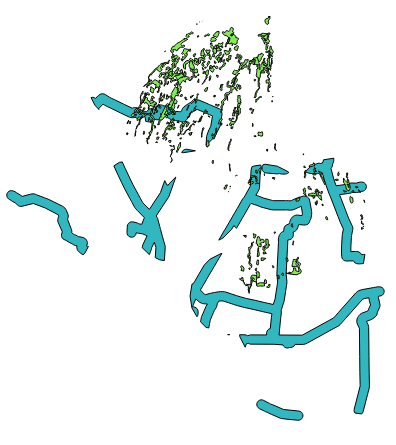

Module 10: Vector Analysis for Problem Solving¶
Learning Objectives
Understand the GIS process
Identify addressable problems
Understand data needs
Start a QGIS project
Analyse problems
Identify hazard zones
Look for important roads
Look for medical facilities
Buffer roads and medical facilities
Analyse overlapped areas
The power of GIS is its ability to help us analyse data. Vector data can be analysed to reveal how different features interact with each other. In this module, we’ll work through the GIS process, attempting to solve a problem, and as we proceed, we will learn about various analysis tools that QGIS provides.
1. The GIS process¶
Before we start, it will be useful to give a brief overview of a process that can be used to solve any GIS problem. The steps are simple:
State the problem
Get the data
Analyse the problem
Present the results
2. Problem¶
Let’s start off by deciding on a problem to solve. Imagine that you’re a disaster manager, and you need to provide the best locations to place refugees (IDPs) in villages surrounding Mount Merapi when it erupts. You’ve come up with the following criteria for these locations:
The area should be a dry field or farm in the districts Ngemplak, Turi or Pakem.
The area must be outside of Merapi Eruption Disaster Prone Region III.
Access to the site should be easy, so it will not be more than 300 metres from a main road.
The site should be close to health facilities.
The land area should be between 50000-150000 m².
3. Data¶
To answer these questions, we’re going to need the following data:
Landuse in Sleman regency
Streets in Sleman
Location of health facilities
KRB Merapi (Merapi Eruption Disaster Prone Region - this is the same data that we learned how to georeference in the previous module)
Note
For this exercise the data has been provided already, but in a real scenario you may need to find providers for the datasets in question. In Indonesia, the National Land Agency and BNPB Bappeda are good sources for the types of data you will need, and OpenStreetMap can be used as a source for roads and infrastructure.
4. Start a project¶
Now that we know what we want to do, let’s start doing it!
Start a new QGIS project.
Start adding the layers we will use. In the
Sleman/Merapi/folder, add the layersjalan_sleman_49S,tempat_penting_Sleman_49S,KRB3_49Sandvegetasi_49S. Your Layers panel should look like this:
Note
Most of the layers are pretty self-explanatory, but what are KRB3, KRB2, and KRB1? These layers show areas of impact when Merapi erupts. KRB3 is the area of worst impact, KRB2 is medium, and KRB1 has little impact. In this scenario we want to find locations that are not within KRB3.
The data we are working with now is similar to that from previous modules, but now it is in a Projected Coordinate System. The previous data was saved in WGS84 - this meant that the coordinates of our features were stored in degrees, which aren’t very good for measuring size or distance. By using a projected system our coordinates are in metres, which is important for analysis, because we can easily measure distances between and around features.
Rename the layers by right-clicking on them and selecting Rename.
Give them the new, simpler names jalan, lokasi_penting, KRB III and vegetasi.
Save your project as merapi_analisis.qgs.
In your operating system’s file manager, create a new folder under
qgis/Sleman/Merapi/and call itevakuasi_bencana.
This is where you’ll save the datasets that we will create during our anaysis.
Now that we’ve got the data, let’s analyse the problem!
5. Analysing the problem: farms and dry fields¶
The first criteria we’re facing is that the land must be a farm or dry field, and it must be in one of three areas. So let’s tell QGIS to only show us the farms and dry fields that are, in fact, in these sub-districts!
Right-click on the vegetasi layer in the Layers panel.
Click Filter… This opens the Query Builder dialog.
Scroll down in the Fields list on the left of this dialog until you see the field kec. Click on it once.
Click the All button underneath the Values list:
Next we are going to build a query. A query is a statement that allows us to show only the data that we want from a layer. In this case, we want to instruct QGIS to only show us farms and dry fields, that have a sub-district value equal to Ngemplak, Turi, or Pakem.
Double-click kec in the Fields list.
Click the = button (under Operators).
Double-click the value Ngemplak in the Values list.
Click OR.
Repeat these steps twice more, using the values Turi and Pakem instead of Ngemplak. The query should look like this:
Click AND.
Now highlight guna_lahan in the Fields list, and click the All button to load the values.
Double-click guna_lahan. Then click the = button. Then double-click the value KEBUN.
Click OR.
Repeat the previous step but instead of KEBUN use TEGALAN. Your query should look like this:
The idea is that the query will filter the data layer so that it will only show us the features we want - that is, farms and dry fields in Pakem, Turis and Ngemplak.
We need to add one more thing to our query: parentheses. Without these, our query won’t work quite right. Add two pairs of parentheses on each side of the word AND, like so:
Click OK. The vegetasi layer has far fewer features now.
Well done! We’ve applied our first criteria to begin solving the problem!
6. Danger zone¶
Our next criteria is that our chosen location should be outside of the danger zone, which is defined by the layer KRB III. For this we can use the Spatial Query tool.
Go to .
Under Select source features from choose vegetasi. In the next box choose Is disjoint. The third box should be set to KRB III. The Spatial Query window should look like this:
Click Apply. Then click Close once the selection has been applied.
Now the vegetasi layer looks like the image below. Notice that all the features have been selected that fall outside the KRB III area.
The next steps of our analysis will be easier if we save this selection as a separate layer.
Right-click on the vegetasi layer and click Save As…
Next to the Save as field in the dialog that appears, click the Browse button.
Save the layer under
evakuasi_bencana/as kebun_tegalan.shp.Check the box labelled Save only selected features and Add saved file to map in the Save vector layer as… dialog.
Click OK.
Rename the layers by right-clicking on new vegetasi layer and selecting Rename. Rename with kebun_tegalan.
Right-click on the old vegetation layer and remove it. You should have these layers remaining:
7. Finding important roads¶
We have a problem with our roads layer, similar to that of our vegetation layer. Our roads layer has too many roads! We only want to use main roads for our analysis, so that we can meet the criteria that our location is within 300 metres of a major road. Once again, we will use the Query Builder.
Right-click on the jalan layer and click Filter…
Build a query for the roads layer, like you did above for the vegetation layer You want only primary and secondary roads, so you need to build this query:
“TYPE” = ‘primary’ OR “TYPE” = ‘secondary’
You can use the approach that we learned above, or you can simply type this command into the query box. But be careful that you type it correctly!
8. Looking for health facilities¶
Using the same approach, build a query for the lokasi_penting layer as shown:
“Fungsi” = ‘Kesehatan’
9. Buffering Roads¶
Okay, we’ve refined our data a bit so that it shows us the features we are interested in analysing. Remember that according to our criteria our land area should be within 300 metres of a main road and close to a health facility. QGIS allows us to calculate distances from any vector object, and we will use this functionality to help us reach a solution.
Make sure that only the jalan and kebun_tegalan layers are visible, to simplify the map while you’re working.
Go to .
In the first drop-down box select jalan.
Enter 300 next to Buffer distance.
Check the box next to Dissolve buffer results.
Click Browse and type buffer_jalan_300m.shp for the filename.
Note
We input the buffer distance in metres. Good thing we used projected data!
Click OK. QGIS will create a buffer around the streets that extends 300 metres.
When the process finish and buffer_jalan_300m.shp appear in the Layers, you can click Close the Buffer dialog.
Close the Buffer dialog and see your new layer:
Note
Those big fat lines are actually areas that are within 300 metres of primary and secondary roads.
10. Buffering health facilities¶
Now try it yourself! Using the same approach, create a new buffer layer around your health facilities. The buffer should be 2.5 km in radius.
Don’t forget to check the box Dissolve buffer results so every overlapping buffer will become one feature. Then save the new layer in the same directory as
buffer_fas_kesehatan_2.5km.shp. Your resulting map will look something like this:
Note
Remember that the buffer distance is in metres. Keep this in mind when you want to create a 2.5 km buffer!
11. Overlapping areas¶
Now we can see areas where a main road is 300 metres away and where there is a health facility within 2.5 km. But we only want the areas where both of these criteria are satisfied at once! To do that we will use the Intersect tool.
Go to .
Enter buffer_fas_kesehatan_2.5km and buffer_jalan_300m as the two input layers. Name the output shapefile intersect_buffer_jalan_kesehatan.shp.
Click OK and add the layer to the project when prompted.
If we hide the original layers, we can see that our new layer shows us the areas where they intersect. These are the areas where both of these criteria are satisfied.
12. Select farms and dry fields¶
Now we have the layer kebun_tegalan, which satisfies two of our criteria, and the layer intersect_buffer_jalan_kesehatan.shp, which satisfies two other criteria. We need to know where they overlap!
Go to . A dialog will appear.
Set it up like this:
Click OK and you’ll see the results are selected (they are yellow).
Let’s save this selection as a new layer.
Right-click on the kebun_tegalan layer in the Layers panel.
Click Save As….
Name the new file kebun_tegalan_lokasi_terpilih.shp. Then check the box next to Save only selected features and Add saved file to map.
After the process is finish, rename the layers by right-clicking the new kebun_tegalan layer and selecting Rename. Rename with kebun_tegalan_lokasi_terpilih. If we hide all the other layers, we can see the resulting layer:
13. Select land areas of the appropriate size¶
Hooray! We have now found land areas that meet four of our five criteria. The only remaining criteria is the size of the land. We need to make sure that our possible locations are between 50000-150000 m².
Open the attribute table for the kebun_tegalan_lokasi_terpilih layer. Notice that there is a column named luas_ha. This is the size of the area in hectares. We could use this field to answer our question, but let’s add another column that contains the size of the area in square metres.
Select the kebun_tegalan_lokasi_terpilih layer and open its attribute table:
Enter editing mode by clicking this button:
Click the Start the field calculator button (located in the Attribute Table window).
Check the box next to Create a new field. In the box type luas_m2.
Change Output field type to Decimal number (real). Then click on Geometry and double-click $area.
Click OK.
You should now see a new column on your attribute table, named luas_m2. And QGIS has filled it in for us with square metres!
Click the edit mode button again, and save your edits.
Close the attribute table. Now we can just do a simple query.
Right-click on the kebun_tegalan_lokasi_terpilih layer and click Filter…
Enter the following:
“luas_m2” >= 50000 AND “luas_m2” <= 150000
Click OK.
That’s it! We have eight pieces of land that meet ALL of our criteria. Any of these pieces of land might be suitable for a location to place refugees.
Right-click the kebun_tegalan_terpilih layer and click Save As. Name the file
refugees_location.shp.